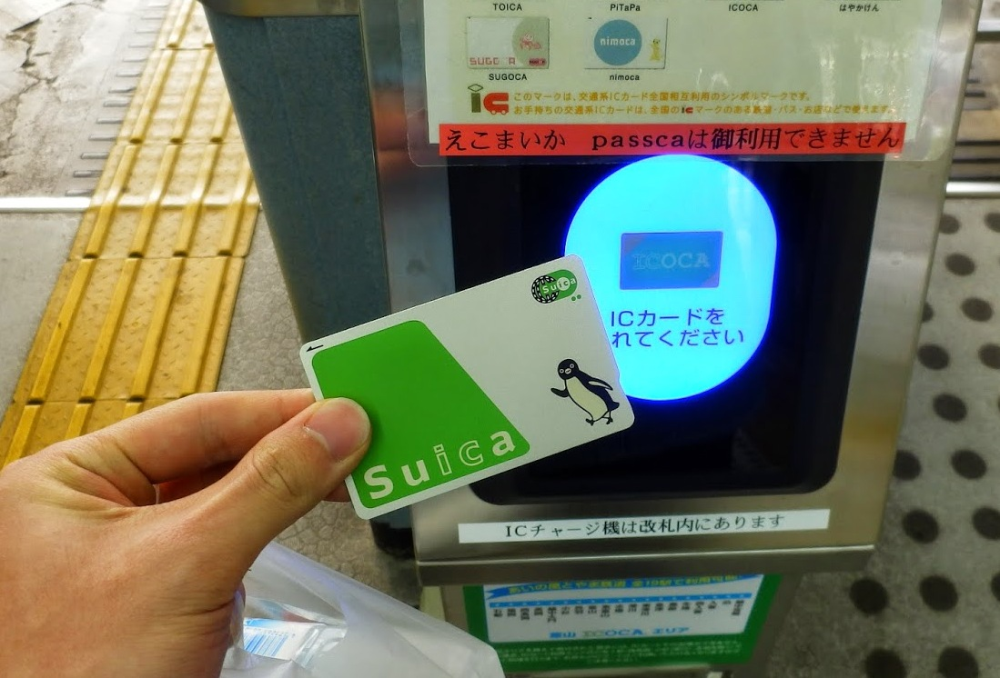
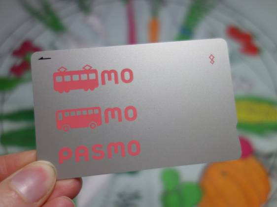
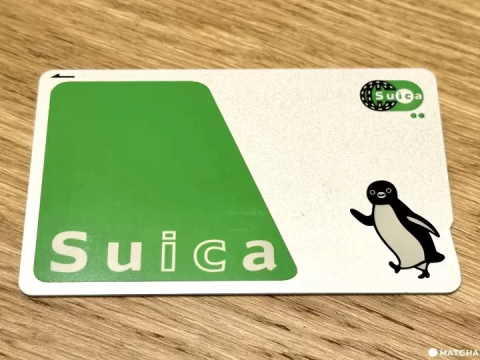
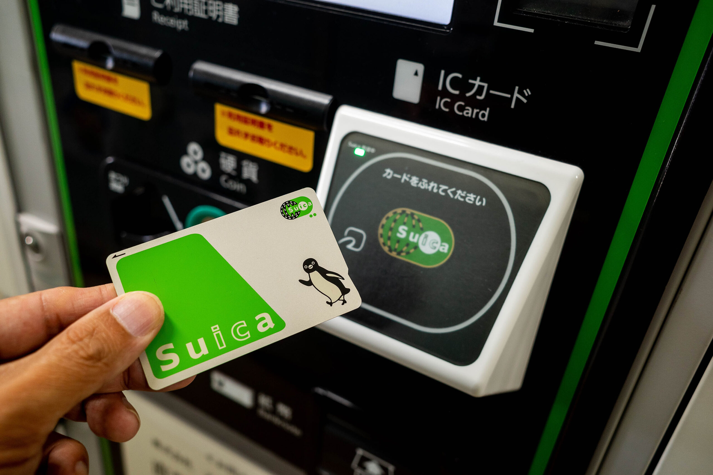
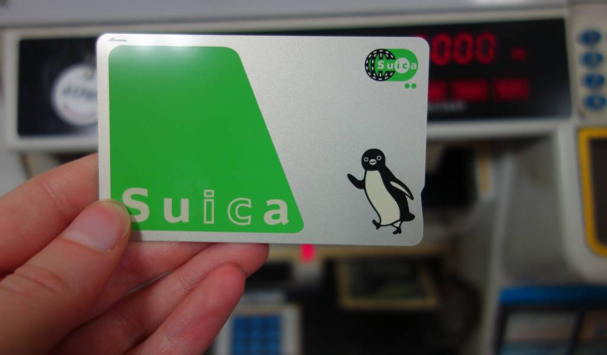
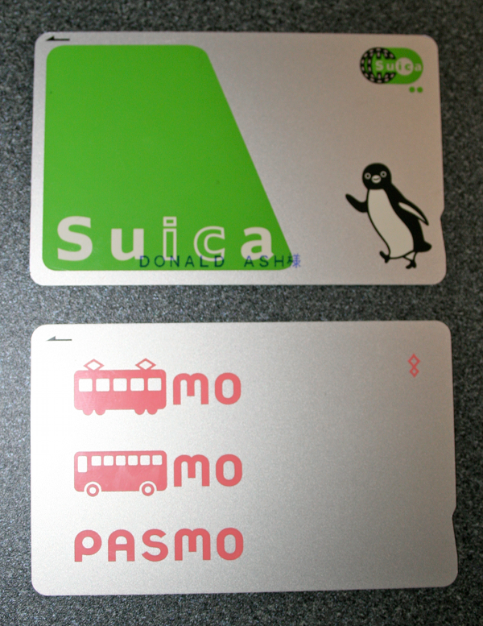
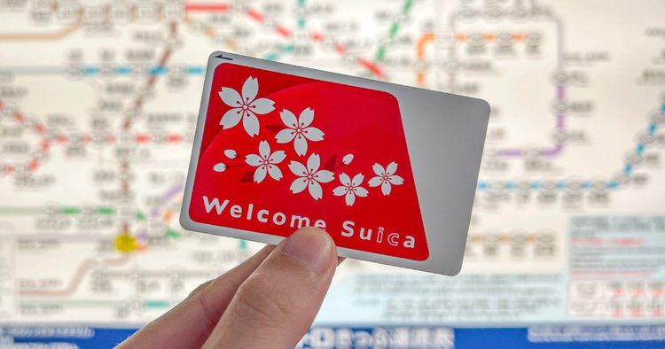
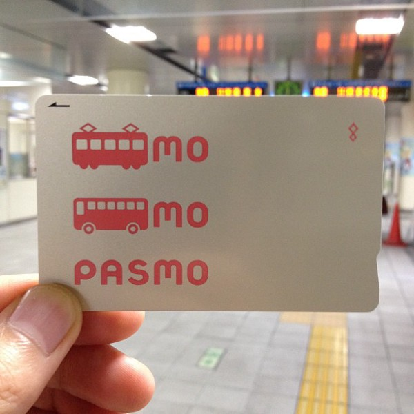
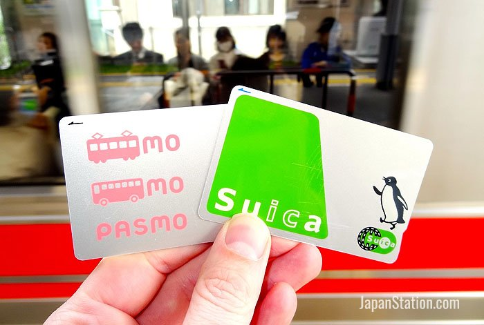

Suica & Pasmo: Your Gateway to Seamless Travel and Payments in Japan
Japan's IC (Integrated Circuit) cards have revolutionized how people navigate the country's complex transportation systems and make everyday purchases. Among these, Suica and Pasmo stand out as the most widely used and versatile options. Whether you're a first-time visitor or a long-term resident, understanding these cards is essential for smooth travels across Japan.
What Are Suica and Pasmo Cards?

Suica and Pasmo are rechargeable smart cards that function as both transportation passes and electronic money. Originally developed for different railway networks, they've evolved into comprehensive payment solutions accepted across Japan's major cities and beyond.
Suica (Super Urban Intelligent Card) was introduced by JR East in 2001, primarily for the Tokyo metropolitan area's JR lines. The name cleverly combines "Super Urban Intelligent Card" with "suika" (watermelon in Japanese), explaining the card's distinctive watermelon-inspired penguin mascot.
Pasmo launched in 2007 as a collaboration between private railway companies and bus operators in the Tokyo area. It was designed to complement Suica by covering non-JR transportation networks, though both cards now work interchangeably across most systems.
Key Features and Benefits
Universal Transportation Access

Both cards provide seamless access to trains, subways, buses, and even some taxis across Japan. Simply tap your card on the reader when entering and exiting, and the fare is automatically calculated and deducted. This eliminates the need to purchase individual tickets or figure out complex fare structures.
Electronic Money Functionality

Beyond transportation, these cards serve as electronic wallets. You can use them at convenience stores, vending machines, restaurants, and thousands of retail locations throughout Japan. The tap-and-go payment system is incredibly convenient for small purchases.
Interoperability
One of the greatest advantages is that Suica and Pasmo cards work interchangeably. You can use a Suica card on Pasmo-operated lines and vice versa. This compatibility extends to most IC card systems across Japan, making them truly national payment solutions.
How to Get Your Card
Physical Cards

You can purchase Suica and Pasmo cards at: * Train station ticket machines * Staffed ticket offices * Major airports * Some convenience stores
The cards typically cost ¥500 as a deposit (which is refundable when you return the card) plus whatever amount you choose to load initially. Most people start with ¥1,000-¥2,000 in credit.
Mobile Options

Modern smartphones can store digital versions of these cards: * iPhone: Add Suica to Apple Wallet through the Wallet app * Android: Use Google Pay or dedicated transportation apps * Japanese smartphones: Often have built-in FeliCa chips for IC card functionality
Mobile versions offer the same functionality as physical cards and can be more convenient since you're less likely to forget your phone.
Using Your Card
Transportation

- Entering: Tap your card on the reader at the ticket gate
- Transferring: No additional action needed when switching between compatible lines
- Exiting: Tap again at your destination - the correct fare is automatically deducted
Payments

Simply tap your card on the payment reader at participating stores. The transaction is instant, and you'll receive a receipt showing your remaining balance.
Checking Balance

- Station ticket machines display your balance when you insert your card
- Mobile apps show real-time balance information
- Many payment terminals display your balance after transactions
Recharging Your Card
At Stations
- Ticket machines accept cash and can reload your card in increments
- Some machines accept credit cards for recharging
- Staffed ticket offices can also add credit to your card
Mobile Top-ups
- Link your mobile IC card to a credit card for automatic recharging
- Set up auto-charge to maintain a minimum balance
- Manual top-ups through banking apps or transportation apps
Convenience Stores
Many convenience stores allow you to add credit to your IC card at the register.
Where You Can Use Them
Transportation Networks
- JR (Japan Railways) lines nationwide
- Tokyo Metro and Toei Subway
- Private railways in major metropolitan areas
- City buses in most urban areas
- Some long-distance buses and airport shuttles
Retail and Services
- All major convenience store chains (7-Eleven, FamilyMart, Lawson)
- Vending machines (drinks, snacks, tickets)
- Department stores and shopping centers
- Restaurants and cafes
- Taxi services in major cities
- Parking meters and bicycle rentals
Tips for Travelers
Getting Started
- Purchase your card at the airport when you arrive for immediate use
- Load enough credit for your first few days of travel
- Keep your card in an easily accessible wallet pocket
Managing Your Balance
- Check your balance regularly, especially before long journeys
- Recharge before your balance gets too low to avoid being stuck at ticket gates
- Consider setting up auto-charge if you're staying long-term
Troubleshooting
- If you tap in but forget to tap out, visit a station office to resolve the issue
- Cards can be temporarily blocked if there's insufficient balance - simply recharge to reactivate
- Keep your card away from other IC cards to prevent interference
Suica vs. Pasmo: Which Should You Choose?

For most users, there's no practical difference between Suica and Pasmo. Both offer identical functionality and acceptance. Your choice might depend on:
- Station availability: Get whichever is more convenient to purchase
- Design preference: Suica features a penguin mascot, while Pasmo has a robot character
- Mobile compatibility: Check which works better with your smartphone
Beyond Tokyo: National Coverage

While Suica and Pasmo originated in Tokyo, they're now accepted across Japan's major transportation networks. You can use them in:
- Osaka and Kansai region
- Kyoto and surrounding areas
- Fukuoka and Kyushu
- Sapporo and Hokkaido
- Most other major cities
The Future of IC Cards
Japan continues to innovate with IC card technology. Recent developments include:
- Enhanced mobile integration
- Improved security features
- Expanded acceptance at smaller retailers
- Integration with tourist services and attractions
Conclusion
Suica and Pasmo cards are indispensable tools for navigating Japan efficiently. They simplify transportation, streamline payments, and provide access to a vast network of services across the country. Whether you're visiting for a week or living in Japan long-term, getting familiar with these cards will significantly enhance your daily experience.
The convenience of tap-and-go payments, combined with universal acceptance across transportation networks, makes these cards essential for anyone spending time in Japan. Start with a basic card and gradually explore the advanced features as you become more comfortable with the system.
Remember, in Japan's increasingly cashless society, having a Suica or Pasmo card isn't just convenient - it's practically necessary for smooth, efficient travel and daily transactions.